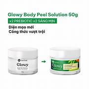
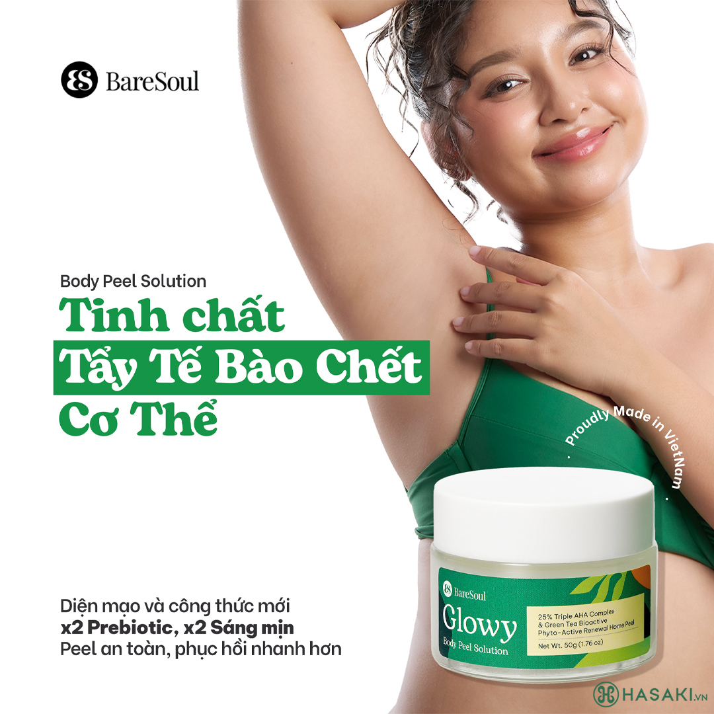
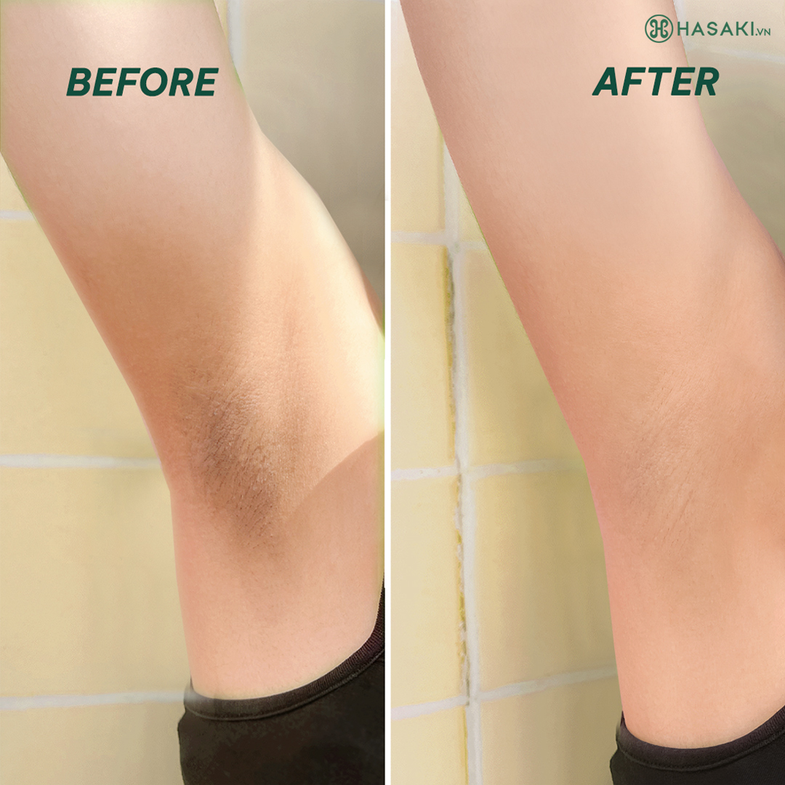

640.000 ₫ (Đã bao gồm VAT)
Giao Nhanh Miễn Phí 2H
Dung Tích: 2x50g
Bạn muốn nhận hàng trước 16h hôm nay (Miễn phí). Đặt hàng trong 30 phút tới và chọn giao hàng 2H ở bước thanh toán.
Tẩy Da Chết Toàn Thân BareSoul Làm Sáng, Giảm Thâm là sản phẩm tẩy tế bào chết toàn thân đến từ thương hiệu BareSoul của Việt Nam. Sản phẩm kết hợp của 3 loại AHA (Glycolic Acid, Lactic Acid, Mandelic Acid) khác nhau và Prebiotic trong một kết cấu gel hỗ trợ loại bỏ các lớp da cũ, hỗ trợ làm thông thoáng lỗ chân lông, làm sáng và đồng đều màu da, hỗ trợ xử lý các vấn đề liên quan đến dày sừng nang lông, mụn và thâm cơ thể. Công thức hoạt động hiệu quả trên nhiều vùng da cơ thể khác nhau, bao gồm cả dưới cánh tay, gáy, vòng, khuỷu tay và đầu gối.


| Thương hiệu | BareSoul |
| Xuất xứ thương hiệu | Việt Nam |
| Nơi sản xuất | Vietnam |
| Loại da | Da thường/Mọi loại da |
| Dung tích | 2x50g |
Hotline: 0845628919
(Miễn phí 08-22h kể cả T7, CN)
Hướng dẫn đặt hàng
Phương thức thanh toán
Chính sách đổi trả
DANH MỤC SẢN PHẨM
Mỹ phẩm High-End
Chăm sóc cá nhân
Băng vệ sinh
Khử mùi
Nước hoa
Nước hoa nữ
Nước hoa nam